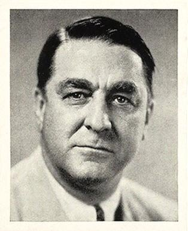
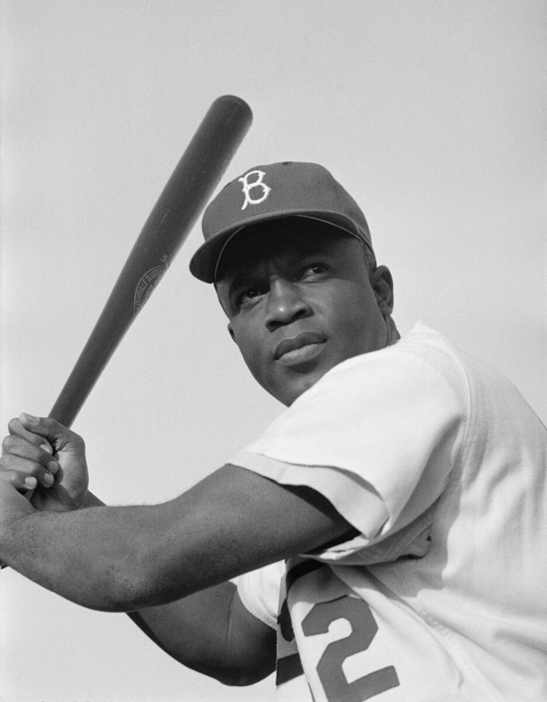

B2 · American History
Jackie Robinson Breaks Baseball's Color Line
The hardest condition of the job was that for three years he was not allowed to answer back.
Play the audio and follow along, then read it again on your own. Tap or hover over a highlighted word to see what it means.
In the summer of 1945, the general manager of the Brooklyn Dodgers, Branch Rickey, interviewed a young infielder called Jackie Robinson for three hours. For most of that time Rickey played the part of a hostile hotel clerk, an opposing player and an abusive spectator, shouting insults at him across the desk to see what he would do.

At one point Robinson asked whether Rickey wanted a player who was afraid to fight back. Rickey's answer has been quoted ever since: he wanted a player with enough courage not to fight back.
Baseball had no written rule excluding Black players. It had something more durable: a gentlemen's agreement among the club owners, in place since the 1880s, that simply was not discussed. Black professionals played in the Negro Leagues, which were serious, well-attended businesses with some of the best players in the country in them.
Robinson was not chosen because he was the best player available — several men in the Negro Leagues were at least as good, and Satchel Paige had been a national figure for years. He was chosen because of what came with him: a university education at UCLA, military service as an officer, a steady fiancée, and a temperament that could survive what was coming. He had also been court-martialled in the army for refusing to move to the back of a bus, and acquitted, which told Rickey what he needed to know.
The agreement was that for three seasons Robinson would not respond to anything. Not to pitchers throwing at his head, not to runners spiking his legs, not to the insults from the stands, not to hotels that refused him a room while his teammates checked in.
He debuted at first base on 15 April 1947. Some of his own teammates circulated a petition saying they would not play with him; the manager told them they could leave instead. The Philadelphia Phillies' manager led a campaign of abuse so unrestrained that it began to turn public opinion in Robinson's favor, which is not what it was intended to do.

He hit .297 that season, led the league in stolen bases, and was named Rookie of the Year. Two years later, when the three years of silence were over and he could answer back — and did, loudly, for the rest of his life — he was named the league's Most Valuable Player.
Attendance records followed him from city to city. Within a decade most teams had integrated, and the Negro Leagues, which had been Black-owned businesses employing hundreds of people, collapsed because their best players and their audiences had gone. Integration had a bill, and it was paid by Black owners and by the players who were too old to be signed.
Robinson spent his later life campaigning on civil rights and on the absence of Black managers and executives in the game. He was often described as bitter, mostly by people who had enjoyed the part of the story where he said nothing.
He died in 1972, aged fifty-three, his health wrecked by diabetes and, his family believed, by years of pressure that no statistic records. His number, 42, is now retired across all of Major League Baseball — the only number in the sport that no player on any team may wear.
Key Vocabulary
- a general manager the executive who runs a sports team's operations
- hostile unfriendly and aggressive
- a gentlemen's agreement an unwritten understanding that people keep without a formal rule
- a temperament a person's nature, especially how they react under pressure
- to court-martial to try a member of the armed forces in a military court
- to acquit to decide officially that somebody is not guilty
- to debut to appear for the first time
- a petition a written request signed by many people
- to integrate to end the separation of racial groups in an institution
- to retire (a number) to take a player's shirt number out of use permanently, in their honor
Jackie Robinson Breaks Baseball's Color Line — B2 · American History · Renan the Teacher, English Language Academy · https://renangrossi.github.io/englishclasses/reading/b2/jackie-robinson.html
Interactive Exercises
Practice
Complete each exercise, then click Submit to see your score and an explanation for every answer.
Speaking & Writing
Discussion
There are no right answers here — use these to practice speaking, or write a short answer to each.
- Rickey asked Robinson to accept abuse without answering. Was that a fair thing to ask of one person?
- Integration ended the Negro Leagues and the businesses behind them. How should progress be judged when it costs somebody something?
- Robinson was called bitter when he spoke out later. Why do people prefer the silent version of a story like his?